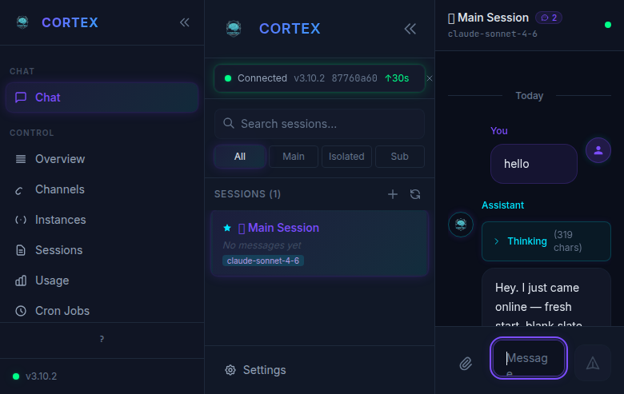
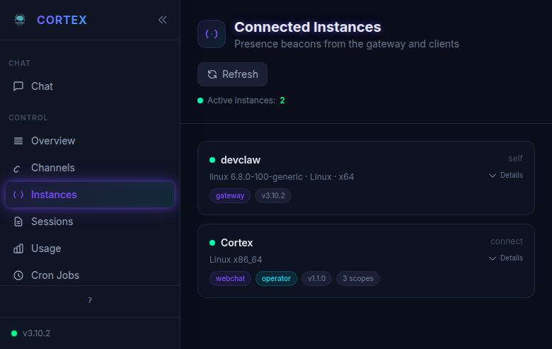
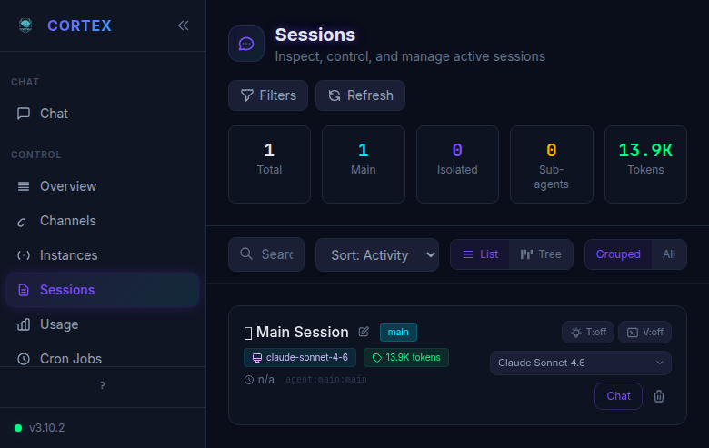
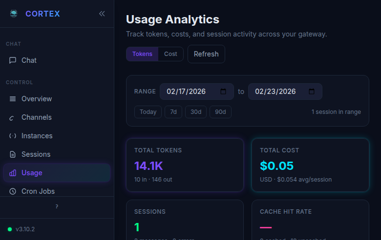
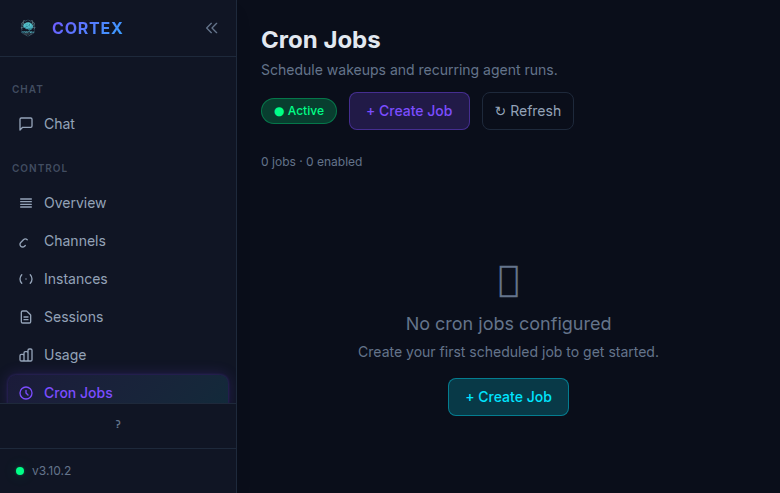
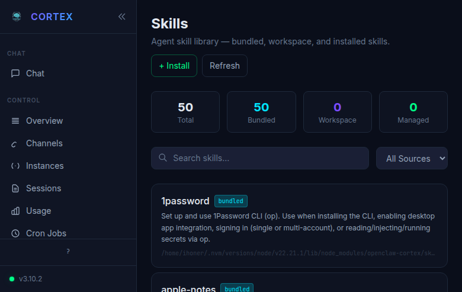
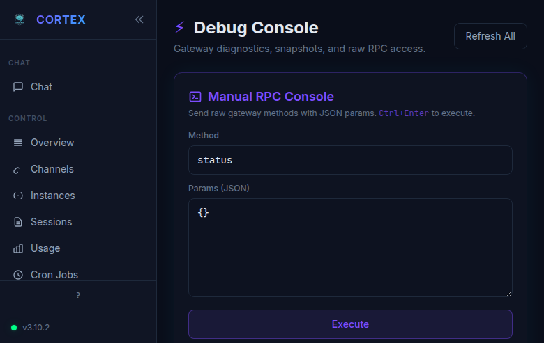

Cortex Documentation Guide
The comprehensive reference for the Cortex AI Assistant Command Center.
Cortex v3.10+ · Last updated February 2026
Table of Contents
- Introduction
- Getting Started
- Chat
- Overview
- Channels
- Instances
- Sessions
- Usage Analytics
- Cron Jobs
- Exec Approvals
- Audit Log
- API Tokens
- Agents
- Skills
- Nodes
- Memory
- Settings
- Gateway Configuration
- Debug Console
- Logs
- Keyboard Shortcuts
- Security & Roles
- Configuration Reference
- CLI Reference
- Troubleshooting
1. Introduction
What is Cortex?
Cortex is a security-hardened fork of OpenClaw — a personal AI assistant command center that runs on your own infrastructure. It provides a unified web UI (the Cortex UI) to manage an AI agent gateway that connects to LLM providers (Anthropic Claude, OpenAI GPT, etc.) and messaging channels (Discord, Signal, Telegram, WhatsApp, Slack, IRC, and more).
Think of it as your AI's brain and control panel. The gateway does the thinking — routing messages, managing sessions, calling models, executing tools — while the Cortex UI gives you full visibility and control over everything.
What Problems Does It Solve?
- Centralized AI Management: One interface to control AI interactions across all your messaging platforms
- Security-First Design: Role-based access control, device pairing with Ed25519 identities, audit logging, and scoped API tokens
- Self-Hosted Privacy: Your data stays on your infrastructure — no third-party platforms see your conversations
- Multi-Channel Presence: Your AI assistant can respond on WhatsApp, Discord, Telegram, Slack, Signal, and more — simultaneously
- Distributed Execution: Offload tool execution (browser automation, file system access, system commands) to remote nodes
- Full Observability: Live logs, usage analytics, session management, and debug tooling
Architecture Overview
Cortex follows a Gateway + Nodes architecture:
┌─────────────────┐ ┌──────────────────────────┐ ┌─────────────────┐
│ Web Browser │◄──►│ Gateway │◄──►│ Node Worker │
│ (Cortex UI) │ │ ┌──────────────────────┐ │ │ (headless) │
│ │ │ │ Control Plane │ │ │ │
└─────────────────┘ │ │ • Cortex Web UI │ │ │ • Exec │
│ │ • Agent Engine │ │ │ • Browser │
┌─────────────────┐ │ │ • Session Manager │ │ │ • Camera │
│ Discord Bot │◄──►│ │ • Model Router │ │ │ • Screen │
│ Telegram Bot │ │ │ • Channel Adapters │ │ │ • Canvas │
│ WhatsApp │ │ │ • Memory System │ │ └─────────────────┘
│ Signal │ │ │ • Cron Scheduler │ │ ▲
│ Slack │ │ │ • Security Layer │ │ │
│ IRC │ │ └──────────────────────┘ │ WebSocket
└─────────────────┘ └──────────────────────────┘ Connection
▲
│
Port 18789
(WebSocket + HTTP)
Gateway (Control Plane):
- Central coordination and routing hub
- Serves the Cortex Web UI
- Manages all LLM provider connections
- Hosts channel adapters (Discord, Telegram, etc.)
- Enforces security policies and RBAC
- Runs the agent engine, memory system, and cron scheduler
Nodes (Execution Plane):
- Lightweight headless workers that connect to a gateway
- Execute commands on behalf of the gateway (system, browser, camera, etc.)
- No web UI, no admin interface — pure execution
- Auto-reconnect with exponential backoff
Web Clients:
- The Cortex UI running in any modern browser
- Authenticates via device pairing or API tokens
- Real-time WebSocket connection to the gateway
Quick Start
# Prerequisites: Node.js ≥ 22
# Install Cortex globally
npm install -g openclaw-cortex
# Run the onboarding wizard
cortex onboard
# Start the gateway
cortex gateway start
# Open the Cortex UI
# Default: http://localhost:18789
Migrating from OpenClaw? Cortex is a drop-in replacement. Same data directory (
~/.openclaw/), same config format, same protocols. See the Migration Guide for details.
2. Getting Started
Installation Methods
npm Package (Recommended)
npm install -g openclaw-cortex
cortex onboard
The onboard wizard walks you through gateway setup, model provider authentication, channel integrations, and security configuration.
Docker
git clone https://github.com/ivanuser/cortex.git
cd cortex
docker-compose up -d
The Docker image exposes port 18789 by default. Map volumes for persistent data:
volumes:
- ~/.openclaw:/root/.openclaw
From Source
git clone https://github.com/ivanuser/cortex.git
cd cortex
npm install
npm run build
npm link
cortex onboard
First-Run Setup
When you first launch Cortex, the onboarding wizard guides you through:
- Gateway Mode: Local (runs on this machine) or Remote (connects to an existing gateway)
- Model Provider: Configure API keys for Anthropic, OpenAI, or other providers
- Security: Set up authentication — gateway token, device pairing, or both
- Channels: Optionally connect messaging platforms
- Cortex UI: The web interface is automatically enabled on the gateway
After onboarding, start the gateway:
# Foreground (development)
cortex gateway run
# Background service
cortex gateway start
# Check status
cortex gateway status
Connecting to the Gateway
Open your browser and navigate to the gateway URL (default: http://localhost:18789). If the gateway is running on a different machine or behind a reverse proxy, use the appropriate URL.
Tip: For remote access through Cloudflare Tunnel, nginx, or similar, make sure to add the external URL to
gateway.controlUi.allowedOriginsin the config.
Authentication Methods
Cortex supports multiple authentication methods, from zero-config to enterprise-grade:
Device Identity (Ed25519 Pairing)
The primary authentication method. When a new browser connects:
- The browser generates a unique Ed25519 keypair (the "device identity")
- The gateway receives a pairing request
- An admin approves the device (via CLI or UI)
- The device is permanently paired with a role assignment
# List pending pairing requests
cortex devices list --pending
# Approve a device
cortex devices approve <request-id>
# Approve with a specific role
cortex devices approve <request-id> --role operator
API Tokens
For programmatic access or quick authentication without device pairing:
# Create a token
cortex tokens create --name "my-token" --role operator --expires 30d
# The token (ctx_...) can be used as a URL parameter or header
# Example: ws://localhost:18789?token=ctx_abc123...
Tokens are prefixed with ctx_ and can have any of the four roles: admin, operator, viewer, chat-only.
Pairing Codes
Six-digit numeric codes for quick device pairing:
# Generate a pairing code (valid for 5 minutes by default)
cortex pair-code --role operator
# Output: 847291
Enter the code in the Cortex UI when prompted to pair.
Invite Links
Shareable URLs that allow new devices to self-pair:
# Create an invite link
cortex invite create --role operator --uses 5 --expires 7d
# List active invites
cortex invite list
# Revoke an invite
cortex invite revoke <invite-id>
QR Codes
The Nodes page can generate QR codes containing embedded invite links for easy mobile/node pairing.
LAN Auto-Approve
For trusted local networks, enable automatic device approval:
{
"gateway": {
"security": {
"lanAutoApprove": true,
"lanAutoApproveRole": "operator"
}
}
}
⚠️ Warning: Only use LAN auto-approve on fully trusted networks. Any device on the LAN can join automatically.
3. Chat
The Chat page is the primary interface for interacting with your AI assistant. It uses a responsive three-panel layout optimized for session management and conversation.

Layout
The chat interface consists of three panels:
| Panel | Purpose | Key Features |
|---|---|---|
| Left Sidebar | Navigation | App sections, version indicator, help |
| Middle Panel | Session List | Search, filters, session cards |
| Right Panel | Conversation | Messages, thinking blocks, input area |
Both the left sidebar and middle panel can be collapsed using the « chevron buttons, giving you a full-width chat experience when needed.
Left Sidebar
The navigation sidebar provides quick access to all Cortex sections:
- CHAT section — the main conversation interface
- CONTROL section — Overview, Channels, Instances, Sessions, Usage, Cron Jobs
- Footer — Help (
?) button and version indicator with connection status (green dot = connected)
The active page is highlighted with a teal accent bar on the left edge and a subtle background tint.
Session List (Middle Panel)
The middle panel is your session manager:
- Connection Status Banner: Shows the connection state, gateway version, protocol version, and uptime. A green dot indicates a healthy connection. Click
×to dismiss. - Search Bar: Instantly filter sessions by name or content
- Filter Tabs: Quick-filter by session type:
- All — show every session
- Main — primary agent sessions
- Isolated — standalone sessions with their own context
- Sub — sub-agent sessions spawned by the main agent
- Session Count: Shows the total number of sessions
- New Session (
+): Create a new session - Refresh: Sync the session list with the gateway
Each session card displays:
- Session name (with type indicator emoji)
- Last message preview
- Model badge (e.g.,
claude-sonnet-4-6) - Click to open the conversation in the right panel
Session Types
| Type | Description | Use Case |
|---|---|---|
| Main | The primary agent session | Default conversations, persistent context |
| Isolated | Independent session with its own context | Separate tasks, experiments |
| Sub-agent | Spawned by the main agent for subtasks | Background work, parallel processing |
Conversation Panel (Right Panel)
The right panel displays the active conversation:
- Header: Session name, message count badge, and current model
- Message Display: Messages from both you and the assistant with:
- Timestamps with relative/absolute time
- Avatars — colored circles for user and assistant
- Copy button on hover for any message
- Thinking blocks — collapsible sections showing the assistant's reasoning process (with character count)
- Tool calls — expandable sections showing tool invocations and results
- Date Dividers: "Today", "Yesterday", etc. between messages from different days
Input Area
The input area at the bottom of the conversation panel provides:
- Text Input: Type your message. Press
Enterto send,Shift+Enterfor a newline. - Image Attach Button (📎): Click to open the file picker for images
- Image Support: Three ways to add images:
- Paste from clipboard (
Ctrl+V/Cmd+V) - Drag and drop files onto the chat
- File picker via the attach button
- Paste from clipboard (
- Focus Shortcut: Press
Ctrl+/from anywhere to focus the input
Tip: The input field supports multiline text. Use
Shift+Enterto add newlines without sending the message.
4. Overview
The Overview page is your gateway dashboard — a quick health check showing the most important metrics at a glance.

Dashboard Cards
The dashboard displays a grid of status cards:
| Card | Description | Values |
|---|---|---|
| STATUS | Gateway connection state | Connected (green), Disconnected (red) |
| UPTIME | Time since gateway started | Duration or "n/a" if unavailable |
| SESSIONS | Active session count | Number + main session name |
| MODELS | Available model count | Total from all configured providers |
| INSTANCES | Connected clients and nodes | Count with "View all →" link |
| CRON | Cron scheduler status | Next run time, Enabled/Disabled badge |
| AUTH | Authentication status | Gateway device ID (truncated), auth mode |
Status Indicators
- Green border/text: Healthy, connected, active
- Yellow/Amber: Unknown, degraded, or unavailable
- Purple: Informational metrics (model count)
Quick Links
Each card links to its corresponding detail page:
- Instances → "View all →" navigates to the Instances page
- Cron → "Manage jobs →" navigates to Cron Jobs
- Auth → "Configure →" navigates to Gateway Configuration
Refresh
Click the Refresh button in the top-right corner to re-fetch all dashboard data from the gateway.
5. Channels
The Channels page manages your messaging platform integrations. Each supported platform appears as a card with status indicators and actions.

Supported Channels
| Channel | Description | Auth Method |
|---|---|---|
| Discord | Discord bot integration | Bot token |
| Signal | Signal messenger | Linked device (QR) |
| Telegram | Telegram bot | Bot token |
| WhatsApp Web | QR code linking | |
| Slack | Slack workspace | OAuth / Bot token |
| IRC | IRC networks | Server/nick config |
| Google Chat | Google Workspace | Service account |
| Nextcloud Talk | Nextcloud chat | App password |
| iMessage | Apple Messages | macOS bridge |
Channel Cards
Each channel card displays:
- Avatar: Platform icon/initial with a colored circle
- Name: Channel identifier
- Status Badge:
- 🟢 CONNECTED — fully operational
- 🔴 DISCONNECTED — not running or connection lost
- 🟡 CONFIGURED — settings present but not connected
- Status Properties:
- Configured: Whether the channel has configuration values set
- Running: Whether the channel adapter process is active
- Connected: Whether the channel has an active connection to the platform
- Details: Expandable section (
▽ Details) with additional channel information
Actions
Depending on the channel type, different action buttons appear:
| Action | Description | Channels |
|---|---|---|
| Show QR | Display QR code for device linking | WhatsApp, Signal |
| Relink | Reset and re-establish connection | WhatsApp, Signal |
| Wait for scan | Begin QR scan listener | WhatsApp, Signal |
| Probe All | Test connectivity for all channels | All |
The Probe All button in the toolbar sends a health check to every configured channel and refreshes their status.
Summary Stats
At the top of the page, inline statistics show:
- Total: Number of configured channels
- Connected: Actively connected channels
- Configured: Channels with saved settings
Configuring a Channel
Channel configuration is done through the Gateway Configuration page under the Channels section. Each channel has its own set of required fields (tokens, API keys, phone numbers, etc.).
Example channel config (Telegram):
{
"channels": {
"telegram": {
"token": "123456:ABC-DEF...",
"allowedUsers": ["your_username"]
}
}
}
Tip: After configuring a channel in the config editor, click Apply & Restart to activate it. Then return to the Channels page to verify the connection status.
6. Instances
The Instances page shows all real-time connected clients and nodes — a live view of who and what is connected to your gateway.

Instance Cards
Each connected instance is displayed as a card with:
- Online Indicator: Green dot for active connections
- Hostname: The display name of the connected device
- Connection Type: How the instance connected (e.g., "self" for the gateway, "connect" for clients)
- System Info: Operating system, kernel version, and architecture
- Tags: Role and capability badges:
| Tag | Description |
|---|---|
| gateway | The gateway process itself |
| webchat | A Cortex UI browser session |
| node | A connected node worker |
| operator | Device with operator role |
| admin | Device with admin role |
| viewer | Device with viewer role |
| v3.10.2 | Version badge |
- Scopes: Number of authorized scopes (e.g., "3 scopes")
- Details: Expandable section with full connection metadata
Refresh
Click Refresh to update the instance list. Instances appear and disappear in real-time as devices connect and disconnect.
Note: The gateway itself always appears as an instance (tagged "self"). This is normal and shows the gateway's own system information.
7. Sessions
The Sessions page is a comprehensive session management dashboard, giving you full control over all active and historical sessions.

Stats Bar
Five summary cards across the top:
| Stat | Description | Color |
|---|---|---|
| Total | All sessions | White |
| Main | Primary agent sessions | Green |
| Isolated | Standalone sessions | Cyan |
| Sub-agents | Child sessions | Yellow |
| Tokens | Total token usage across sessions | Green |
Search and Filters
- Search: Filter sessions by name or content
- Sort: Choose sort order — "Activity" (most recent first), "Name", "Tokens", "Created"
- View Modes:
- List: Flat list of all sessions
- Tree: Hierarchical view showing parent-child relationships (main → sub-agents)
- Grouping:
- Grouped: Sessions organized by type (main, isolated, sub-agents)
- All: Flat ungrouped list
- Filters Button: Additional filter options
Session Cards
Each session card provides:
- Session Name: With an edit (pencil) icon to rename inline
- Type Badge: "main", "isolated", or "sub" tag
- Toggle Indicators: "T:off" (thinking visibility), "V:off" (verbose mode)
- Model Badge: Current model (e.g.,
claude-sonnet-4-6) with brain icon - Token Count: Total tokens used in this session
- Session Key: The internal identifier (e.g.,
agent:main:main) - Timestamp: Last activity time
Inline Controls
Each session card has action controls:
| Control | Description |
|---|---|
| Model Dropdown | Override the model for this session (e.g., switch from Claude Sonnet to Claude Opus) |
| Chat | Jump to this session in the Chat view |
| Delete (🗑) | Delete the session and its history |
| Rename (✏️) | Edit the session name inline |
Tip: Model override is per-session. If you set a model on a session, it takes priority over the agent's default model. Clear the override to return to the default.
8. Usage Analytics
The Usage Analytics page tracks token consumption, costs, and session activity across your gateway. Essential for monitoring spend and understanding usage patterns.

View Toggle
Switch between two views:
- Tokens: Focus on token consumption (input/output breakdown)
- Cost: Focus on dollar costs per session and over time
Date Range Selector
Filter analytics by time period:
| Preset | Range |
|---|---|
| Today | Current day only |
| 7d | Last 7 days |
| 30d | Last 30 days |
| 90d | Last 90 days |
You can also set custom date ranges using the calendar date pickers.
The range indicator shows how many sessions fall within the selected period.
Metrics Cards
| Metric | Description | Example |
|---|---|---|
| TOTAL TOKENS | Sum of all input + output tokens | "14.1K" with "10 in · 146 out" breakdown |
| TOTAL COST | Estimated cost in USD | "$0.05" with per-session average |
| SESSIONS | Number of sessions in the time range | Session count |
| CACHE HIT RATE | Percentage of prompt cache hits | Visual bar + percentage |
Cost Tracking
Cost is estimated based on the token pricing for each model used. The analytics page aggregates across all sessions and model providers. The cost breakdown includes:
- Per-session average cost
- Input vs. output token split
- Cache efficiency metrics
Note: Cost estimates are based on published provider pricing. Actual billing may differ slightly due to rounding, caching credits, or promotional pricing.
9. Cron Jobs
The Cron Jobs page lets you schedule recurring tasks for your AI agent — automated wakeups, periodic checks, report generation, or any repeating workflow.

Overview
Cron jobs are scheduled tasks that run on the gateway. Each job can:
- Send a message to the agent on a schedule
- Trigger a system event at specified intervals
- Run in the main session or in an isolated session
- Use a specific model override
Status Indicator
The header shows the global cron status:
- 🟢 Active: The cron scheduler is running
- 🔴 Paused: Cron is disabled in configuration
Creating a Job
Click + Create Job to open the job creation form:
| Field | Description | Options |
|---|---|---|
| Name | Human-readable job name | Free text |
| Schedule Type | How to specify timing | at (one-time), every (interval), cron (expression) |
| Schedule | The timing specification | "every 30m", "0 9 * * 1-5", "at 2024-03-01T09:00" |
| Payload Type | What the job does | agentTurn (send message), systemEvent (trigger event) |
| Payload | The message or event data | Free text or JSON |
| Session Target | Where to run | main (main session), isolated (new isolated session) |
| Model Override | Optional model for this job | Any available model |
| Delivery | Channel routing | Target channel or "last" |
Schedule Types
# Run every 30 minutes
every 30m
# Run at a specific cron schedule (Mon-Fri at 9 AM)
0 9 * * 1-5
# Run once at a specific time
at 2026-03-01T09:00:00Z
Job Cards
Each configured job appears as a card with:
- Job Name: The human-readable name
- Schedule: The timing specification
- Status: Enabled (green toggle) or Disabled
- Next Run: When the job will fire next
- Actions:
- Enable/Disable Toggle: Pause or resume the job
- Run Now: Trigger the job immediately
- Edit: Modify the job configuration
- Delete: Remove the job
Configuration
Cron can also be configured via the gateway config:
{
"cron": {
"enabled": true,
"store": "~/.openclaw/cron.db",
"maxConcurrentRuns": 3,
"sessionRetention": "7d"
}
}
Tip: Use
agentTurnpayload type to send a message as if you typed it. UsesystemEventfor internal triggers that the agent handles via system prompt instructions.
10. Exec Approvals
The Exec Approvals page manages the command approval system — a security feature that requires human approval before the AI agent can execute certain shell commands.

Two-Tab Interface
The page has two tabs:
Queue Tab
The Queue shows real-time pending command approval requests:
- Pending Approvals: Commands waiting for human review
- Each request shows the command the agent wants to run
- Countdown Timer: Time remaining before the request auto-expires
- Approve (green): Allow the command to execute
- Deny (red): Block the command
- Recent Decisions: History of recently approved/denied commands for this session
When the queue is empty, a green checkmark icon confirms "No pending approval requests" with the message "Requests will appear here in real-time when agents need permission."
Allowlist Tab
The Allowlist is a structured JSON editor for configuring permanent command allowlists:
- Commands on the allowlist run without approval
- Allowlists are scoped per security level
- Use patterns and wildcards for flexible matching
Example allowlist configuration:
{
"full": ["*"],
"allowlist": ["ls *", "cat *", "grep *", "git status", "git log *", "npm test", "node *"],
"deny": ["rm -rf *", "sudo *"]
}
Security Modes
The exec approval system supports three security modes:
| Mode | Description |
|---|---|
| full | All commands allowed without approval |
| allowlist | Only allowlisted commands run freely; others need approval |
| deny | All commands require approval |
⚠️ Security Note: The
fullmode should only be used in trusted development environments. For production, useallowlistwith carefully curated commands.
11. Audit Log
The Audit Log page provides a security event timeline — every significant action in your Cortex gateway is recorded and displayed here.

Time Range Filters
Quick-select buttons filter the log by time window:
| Filter | Range |
|---|---|
| 1h | Last hour |
| 6h | Last 6 hours |
| 24h | Last 24 hours (default) |
| 7d | Last 7 days |
| 30d | Last 30 days |
| All | All recorded events |
Action Type Filter
The All Actions dropdown lets you filter by specific event types:
device.pair.approve— A device pairing was approveddevice.pair.reject— A device pairing was rejectedauthorize.denied— An action was blocked due to insufficient permissionstoken.create— An API token was createdtoken.revoke— An API token was revokedconfig.apply— Gateway configuration was appliedconfig.set— A configuration value was changeddevice.role.set— A device's role was changed
Log Table
The audit log displays events in a table with three columns:
| Column | Description |
|---|---|
| TIME | Timestamp of the event (e.g., "Feb 23, 04:48:31 AM") |
| ACTION | The event type in purple monospace text (e.g., device.pair.approve) |
| ACTOR | Who performed the action — either "cli" or a truncated device ID |
Each actor field has a clipboard icon for copying the full device ID.
Logged Events
The audit system tracks:
- Authentication: Device pairing (approve/reject), token creation/revocation
- Authorization: Permission denials with the specific method that was blocked
- Configuration: Config changes, applies, and restarts
- Session: Session creation, deletion, compaction
- Admin: Role changes, device removals, security setting changes
Tip: Use the audit log to track down "authorize.denied" events when debugging permission issues. The action field shows exactly which method was blocked (e.g.,
authorize.denied:device.pair.list).
12. API Tokens
The API Tokens page lets you create and manage scoped access tokens for programmatic or quick-access authentication.

What Are API Tokens?
API tokens provide instant authentication without the device pairing flow. They're useful for:
- CI/CD pipelines that need gateway access
- Scripts and automation tools
- Quick browser access (paste token in URL)
- Temporary access for collaborators
All tokens are prefixed with ctx_ for easy identification.
Creating a Token
Click + Create Token to open the creation form:
| Field | Description | Options |
|---|---|---|
| Name | Human-readable label | Free text (e.g., "CI Pipeline", "Test Token") |
| Role | Permission level | admin, operator, viewer, chat-only |
| Expiration | When the token expires | Duration (e.g., "24h", "7d", "30d") or "never" |
⚠️ Important: The full token is only shown once at creation time. Copy it immediately — it cannot be retrieved later.
Token List
Each token appears as a card showing:
- Name: The token's label (e.g., "Test01")
- Role Badge: Color-coded role indicator (e.g., purple "OPERATOR" pill)
- Status: Green dot for active tokens
- Created Date: When the token was issued
- Expiry Date: When the token will expire
- Revoke Button: Red button to immediately invalidate the token
The header shows a count badge (e.g., "1 active") for quick reference.
Using Tokens
Tokens can be used in several ways:
# As a URL parameter
ws://localhost:18789?token=ctx_abc123...
# As a CLI option
cortex devices list --token ctx_abc123...
# In the Cortex UI connection settings
# Paste the token in the gateway token field
Token Security
- Tokens inherit the permissions of their assigned role
- Revoking a token immediately terminates all sessions using it
- Tokens are stored as hashed values — the gateway never stores the plaintext
- Expired tokens are automatically invalidated
13. Agents
The Agents page manages agent workspaces, identities, tools, and channel bindings. Each agent is an independent AI personality with its own configuration.

Agent Selector (Left Sub-Panel)
The left panel shows all configured agents:
- Agent Count: "1 configured" (or more)
- Agent Entry: Each agent shows its name, ID, and role badges:
- DEFAULT badge: The agent that handles unrouted messages
- Click to select and view its details
Agent Detail Panel (Right Sub-Panel)
The detail panel has six tabs:
Overview Tab
Displays workspace paths and identity metadata:
| Field | Description |
|---|---|
| WORKSPACE | File system path to the agent's workspace (e.g., ~/.openclaw/workspace) |
| PRIMARY MODEL | The default LLM model for this agent |
| IDENTITY NAME | Display name (e.g., "Assistant") |
| DEFAULT | Whether this is the default agent |
| IDENTITY EMOJI | Optional emoji identifier |
| SKILLS FILTER | Which skills this agent can use ("all skills" or specific list) |
Files Tab
A workspace file browser showing the agent's files:
AGENTS.md— Agent behavior instructionsSOUL.md— Personality definitionUSER.md— User contextMEMORY.md— Long-term memorymemory/— Daily memory files- Other workspace files
Tools Tab
Lists all tools available to this agent:
- Tool name and description
- Source (built-in, skill, plugin)
- Enabled/disabled status
Skills Tab
Shows skills installed for this specific agent:
- Skill name and source
- Configuration status
- Enable/disable controls
Channels Tab
Channel bindings — which messaging channels this agent responds on:
- Channel assignment list
- Priority and routing rules
- Binding configuration
Cron Jobs Tab
Agent-specific scheduled tasks:
- Cron jobs that target this agent
- Schedule and status information
- Quick management controls
Multi-Agent Setup
Cortex supports multiple agents, each with their own:
- Workspace files and memory
- Model preferences
- Channel bindings
- Skills and tools
- Personality and behavior
Configure multiple agents in the gateway config:
{
"agents": {
"list": [
{
"id": "main",
"identity": { "name": "Assistant" },
"default": true
},
{
"id": "coder",
"identity": { "name": "CodeBot", "emoji": "🤖" },
"model": "claude-sonnet-4-6"
}
]
}
}
14. Skills
The Skills page is a library browser for agent skills — modular capability packages that extend what your agent can do.

What Are Skills?
Skills are markdown-based instruction packages that teach the agent how to use specific tools or perform certain tasks. They're like "training manuals" that get injected into the agent's system prompt when relevant.
Stats Bar
Four summary cards:
| Stat | Description |
|---|---|
| Total | All available skills |
| Bundled | Skills included with Cortex |
| Workspace | Skills from agent workspace directories |
| Managed | Skills installed via the skill manager |
Search and Filter
- Search Input: Filter skills by name or description
- Source Filter: Dropdown to filter by source — "All Sources", "Bundled", "Workspace", "Managed"
Skill Cards
Each skill appears as a card with:
- Name: Skill identifier (e.g., "1password", "apple-notes", "docker")
- Source Badge: Green "bundled" pill, cyan "workspace" pill, or yellow "managed" pill
- Description: What the skill teaches the agent to do
- File Path: Full path to the skill file on disk
Installing Skills
Click + Install to add new skills:
- Install from npm packages
- Install from local directories
- Install from Git repositories
Skills are loaded from these locations:
- Bundled: Included in the Cortex package (
node_modules/openclaw-cortex/skills/) - Workspace: Agent workspace
skills/directory - Extra Dirs: Additional directories specified in config
Skill Configuration
{
"skills": {
"allowBundled": ["docker", "git", "ssh"],
"load": {
"extraDirs": ["/opt/custom-skills"],
"watch": true,
"watchDebounceMs": 1000
},
"limits": {
"maxSkillsInPrompt": 10,
"maxSkillsPromptChars": 50000
}
}
}
Tip: If you have too many bundled skills, use
allowBundledto whitelist only the ones you need. This keeps the agent's system prompt focused and reduces token usage.
15. Nodes
The Nodes page manages your node fleet — remote worker machines that execute commands on behalf of the gateway.

What Are Nodes?
Nodes are headless worker processes that connect to your gateway via WebSocket. They provide execution capabilities that the gateway can delegate to:
- System: Shell command execution, file system access
- Browser: Browser automation (Playwright/CDP)
- Camera: Camera snapshots (on supported hardware)
- Screen: Screen recording/capture
- Canvas: Interactive visual rendering (on supported platforms)
Toolbar
The node fleet toolbar provides:
| Button | Description |
|---|---|
| Search | Filter nodes by name or ID |
| Grid/List Toggle | Switch between grid and list view |
| QR Pair | Generate a QR code for quick node pairing |
| + Add Node | Show installation instructions for new nodes |
| Refresh | Refresh the node list |
Paired Devices
Each paired device appears as a card showing:
- Device Icon: Teal device indicator
- Name: Device hostname (e.g., "Cortex", "AIcreations")
- Role Badge: Color-coded role indicator (e.g., green "OPERATOR")
- Device ID: Truncated Ed25519 identity hash
- Role Dropdown: Change the device's role inline (admin, operator, viewer, chat-only)
Adding a Node
Click + Add Node to reveal one-liner installation commands:
# Install the node package
npm install -g openclaw-cortex
# Connect to the gateway
cortex node run --host gateway.example.com --port 18789
# Or install as a system service
cortex node install --host gateway.example.com --port 18789
cortex node start
QR Pair
Click QR Pair to generate a QR code containing an embedded invite link. Scan with a mobile device or another machine's camera to pair automatically.
The QR code encodes:
- Gateway URL
- Invite token
- Role assignment
- Expiration
Node Detail Panel
Click a node card to expand its detail panel with three tabs:
| Tab | Description |
|---|---|
| Details | Full system info, capabilities, connection metadata |
| Invoke | Send commands directly to the node |
| Exec Allowlist | Configure which commands this node can run |
Node Configuration
Nodes store their configuration in ~/.openclaw/node-host.json:
{
"nodeId": "unique-node-id",
"displayName": "My Node",
"gateway": {
"host": "gateway.example.com",
"port": 18789,
"tls": false
}
}
16. Memory
The Memory page provides a dashboard for the agent memory system — a hybrid BM25 + vector retrieval engine that gives your agent persistent, searchable memory.

Overview
The memory system allows your agent to:
- Remember past conversations and context
- Search through workspace files and documentation
- Retrieve relevant information using hybrid search (keyword BM25 + semantic vector)
- Build long-term knowledge across sessions
CLI Only
Memory operations are currently CLI-only — they cannot be triggered from the web UI. The Memory page provides reference information and configuration status, but actual indexing and searching is done via the command line.
Note: The "CLI Only" badge indicates that memory management requires gateway shell access. Future versions may add web-based memory management.
Search Interface
The search panel shows:
- Search Input: With a note that "Memory search requires CLI"
- Results Count: Configurable number of results (default: 20)
- Search Button: Triggers a search (requires CLI backend)
Configuration Card
The configuration card displays current memory engine settings from the gateway config:
- Memory backend (builtin or qmd)
- Search mode (query, search, vsearch)
- Citation mode (auto, on, off)
- Index paths and patterns
When memory is not configured, it shows "Memory search not configured."
CLI Commands Reference
The CLI Commands card provides quick reference for memory management:
# Check memory system status
cortex memory status
# Index workspace files for search
cortex memory index
# Search memory
cortex memory search "your query here"
# Index with specific agent
cortex memory index --agent main
# Force re-index all files
cortex memory index --force
Memory Configuration
Configure memory in the gateway config:
{
"memory": {
"backend": "builtin",
"citations": "auto",
"qmd": {
"command": "qmd",
"searchMode": "search",
"includeDefaultMemory": true,
"paths": [
{
"path": "~/.openclaw/workspace/memory",
"name": "daily-notes",
"pattern": "*.md"
}
],
"sessions": {
"enabled": true,
"exportDir": "~/.openclaw/agents/main/sessions",
"retentionDays": 30
},
"update": {
"interval": "30m",
"onBoot": true
},
"limits": {
"maxResults": 20,
"maxSnippetChars": 500,
"maxInjectedChars": 10000,
"timeoutMs": 30000
}
}
}
}
Memory Files
The Memory page also includes a file browser for viewing and editing workspace memory files directly:
MEMORY.md— Curated long-term memoriesmemory/YYYY-MM-DD.md— Daily memory logs- Other memory-related workspace files
17. Settings
The Settings page lets you customize the Cortex UI appearance and configure gateway connection details.

Navigation
The Settings page is accessed from the ⚙ icon or by pressing Ctrl+,. A "← Back to Chat" link at the top returns you to the conversation view.
Appearance
Accent Color
Customize the UI accent color used throughout the interface:
Preset Colors (8 swatches):
- Cyan/Aqua
- Purple/Violet (default)
- Hot Pink/Magenta
- Green
- Yellow/Amber
- Rose/Pink
- Orange/Coral
- Mint/Light Cyan
A checkmark (✓) overlay indicates the currently selected color.
Custom Color: Enter any hex color code (e.g., #7c4dff) in the text input. A small preview swatch shows the current color.
The accent color affects:
- Active navigation highlights
- Buttons and interactive elements
- Links and badges
- Input field focus states
- Status indicators
Gateway Connection
Configure which gateway the UI connects to:
- Gateway URL: WebSocket URL (e.g.,
ws://localhost:18789) - Token: API token for authentication (if required)
Tip: Settings are stored in your browser's local storage. Clearing browser data will reset them to defaults.
18. Gateway Configuration
The Gateway Configuration page is a full-featured configuration editor for your Cortex gateway. It provides both a structured form view and a raw JSON editor.

View Modes
Two editing modes are available, toggled at the top:
| Mode | Description | Best For |
|---|---|---|
| Form | Structured visual editor with categorized sections | Day-to-day config changes |
| Raw JSON | Direct JSON text editor | Bulk edits, copy/paste, advanced users |
Form View
The form view organizes configuration into category buttons — clickable pills that filter the config to a specific section:
| Category | Settings |
|---|---|
| Meta | Config metadata, version tracking |
| Env | Environment variables, shell env |
| Wizard | Onboarding wizard state |
| Diagnostics | OpenTelemetry, cache tracing |
| Logging | Log levels, file paths, redaction |
| Update | Update channel (stable/beta/dev) |
| Browser | Browser automation settings, CDP, profiles |
| UI | UI customization (seam color, assistant name/avatar) |
| Auth | Authentication profiles, provider auth, cooldowns |
| Models | Model provider configuration |
| Node Host | Node browser proxy settings |
| Agents | Agent definitions, identities, models |
| Tools | Tool configuration and limits |
| Bindings | Channel-to-agent routing |
| Broadcast | Multi-agent message broadcasting |
| Audio | Voice/TTS settings |
| Media | Media handling options |
| Messages | Message formatting and limits |
| Commands | Command execution settings |
| Approvals | Exec approval configuration |
| Session | Session management settings |
| Cron | Cron scheduler settings |
| Hooks | Webhook configuration |
| Web | WebSocket settings, heartbeat, reconnect |
| Channels | Messaging platform configuration |
| Discovery | mDNS and wide-area discovery |
| Canvas Host | Canvas rendering server |
| Talk | Voice/TTS provider settings |
| Gateway | Core gateway settings (port, bind, TLS, security) |
| Memory | Memory system configuration |
| Skills | Skill loading and limits |
| Plugins | Plugin management |
Search
The Search config keys input filters all configuration fields across all categories. Type a keyword to find the relevant setting quickly.
Config Status
Each section shows a status indicator:
- ✅ configured (green): Section has custom values set
- The config hash is displayed for version tracking
Action Buttons
Three action buttons at the bottom of the page:
| Button | Description | Effect |
|---|---|---|
| Save | Save changes to disk without restarting | Config file updated, no service restart |
| Apply & Restart | Save and restart the gateway to apply changes | Full restart, all connections temporarily drop |
| Update Gateway | Check for and install Cortex updates | Downloads and installs the latest version |
Schema Version
The header shows the current schema version (e.g., "schema 3.10.2") to help identify config compatibility.
⚠️ Warning: Clicking Apply & Restart will briefly disconnect all clients and channels while the gateway restarts. Active conversations will resume automatically after reconnection.
19. Debug Console
The Debug Console provides a manual RPC interface for sending raw gateway methods — essential for testing, debugging, and advanced troubleshooting.

Manual RPC Console
The debug console card contains:
- Method Input: Enter any gateway RPC method name (e.g.,
status,health,sessions.list,config.set) - Params (JSON) Textarea: Enter method parameters as JSON (defaults to
{}) - Execute Button: Send the request (
Ctrl+Enterkeyboard shortcut) - Response Display: Shows the raw JSON response from the gateway
Common Methods
| Method | Description | Example Params |
|---|---|---|
status |
Gateway status summary | {} |
health |
Health check with channel status | {} |
sessions.list |
List all sessions | {} |
models.list |
List available models | {} |
config.set |
Set a config value | {"path": "logging.level", "value": "debug"} |
cron.list |
List cron jobs | {} |
audit.query |
Query audit log | {"limit": 10} |
device.pair.list |
List paired devices | {} |
logs.tail |
Tail gateway logs | {"limit": 50} |
Use Cases
- Testing RPC methods before building automation around them
- Debugging permissions — see exactly what error a method returns for a given role
- <